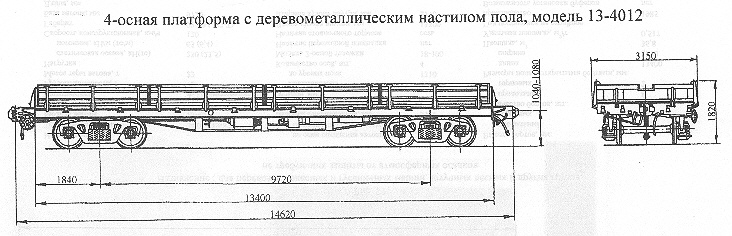

Назначение: для перевозки колесных и гусеничных машин, штучных лесных и других грузов, не требующих защиты от атмосферных осадков
Параметры
| Номер проекта | 4012.00.000-01 |
| Технические условия | ТУ 24.05.819-83 |
| Модель вагона | 13-4012 |
| Тип вагона | 404 |
| Изготовитель | ДВЗ газеты "Правда" |
| Грузоподъемность, т | 71 |
| Масса тары вагона, т | 21,4 |
| Нагрузка: статическая осевая, кН(тс) |
228(23,25) |
| погонная, кН/м(тс/м) | 62(6,32) |
| Скорость конструкционная, км/ч | 120 |
| Габарит | 0-ВМ(01-Т) |
| База вагона, мм | 9720 |
| Длина, мм: по осям сцепления автосцепок |
14620 |
| по концевым балкам рамы | 13400 |
| Ширина максимальная, мм | 3150 |
| Высота от уровня верха головок рельсов, мм: максимальная |
1820 |
| до уровня пола | 1310 |
| Количество осей, шт. | 4 |
| Модель 2-осной тележки | 18-100 |
| Наличие переходной площадки | нет |
| Наличие стояночного тормоза | есть |
| Внутренние размеры кузова, мм: ширина |
2770 |
| длина | 13300 |
| Высота бортов, мм: продольный |
500 |
| торцовых | 400 |
| Количество бортов, шт.: продольный |
8 |
| торцовых | 2 |
| Размер пола с открытыми бортами, мм: длина |
13400 |
| ширина | 2870 |
| Площадь, м² | 36,8 |
| Удельная площадь, м²/т | 0,517 |
| Год постановки на серийное производство | 1985 |
| Возможность установки буфера | нет |